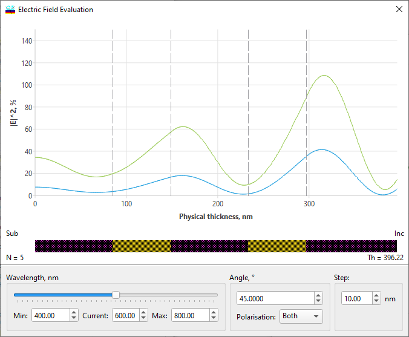
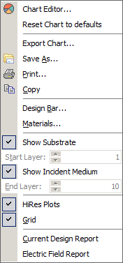

Electric Field Evaluation
Electric Field Evaluation
Navigation: OptiLayer Menu Commands > Analysis Menu >
Electric Field Evaluation
` <idh_color_evaluation_parameter.html>`__ ` <idh_menu_analysis.html>`__ ` <idh_admittance_evaluation.html>`__
The evaluation of standing wave electric fields inside a stack of films is carried out using the Field command from the Analysis Menu. This command computes the electric field intensity within the current design and displays it graphically as shown below. The physical thickness profile of the layers in the design is represented by the design bar, which is displayed just below the graph of electric field strength. The design bar displays different layer materials in various colors and/or patterns. Additionally, the number of layers, N, and the overall thickness, Th, of the coating design are also shown. |E|² values are expressed in relative units when the incident wave has |E|² = 100%. Since these values are quadratic, |E|² can reach 400% in the incident medium in the case of high reflectors.

You can choose the wavelength at which you want to observe the electric field distribution by using the mouse to move the slider in the Wavelength frame. The overall spectral range applicable to the slider is displayed in the Min and Max fields and can be altered; the slider’s current position is shown in the Current field as the wavelength value. If you check the Snap box on the right side of the window, you can restrict the slider to a specific range of wavelength values. When the Snap box is engaged, the slider will only stop at positions dictated by the minimum and maximum wavelength values and the increment specified in the Step field. It’s important to note that the increment is always measured in nanometers and must fall within a range of 1 to 100. Additionally, you can specify the Angle of incidence and the Polarization state (S, P, or Both) in the designated input fields.

Many useful commands are accessible through the right-click popup menu. For example, “Show Substrate” and “Show Incident Medium” activate the display of electric field intensity in the corresponding areas. It is also possible to specify the range of layers of interest when the substrate and incident medium are not displayed. Use the “Start Layer” and “End Layer” controls in this menu when “Show Substrate” and “Show Incident Medium” are not selected. Angular and Spectral Modes can also be switched using this menu. In Angular mode, the Field window will allow you to study the angular dependence of the electric field distribution.